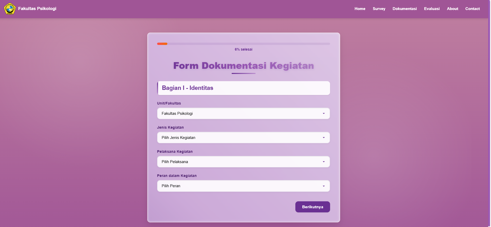
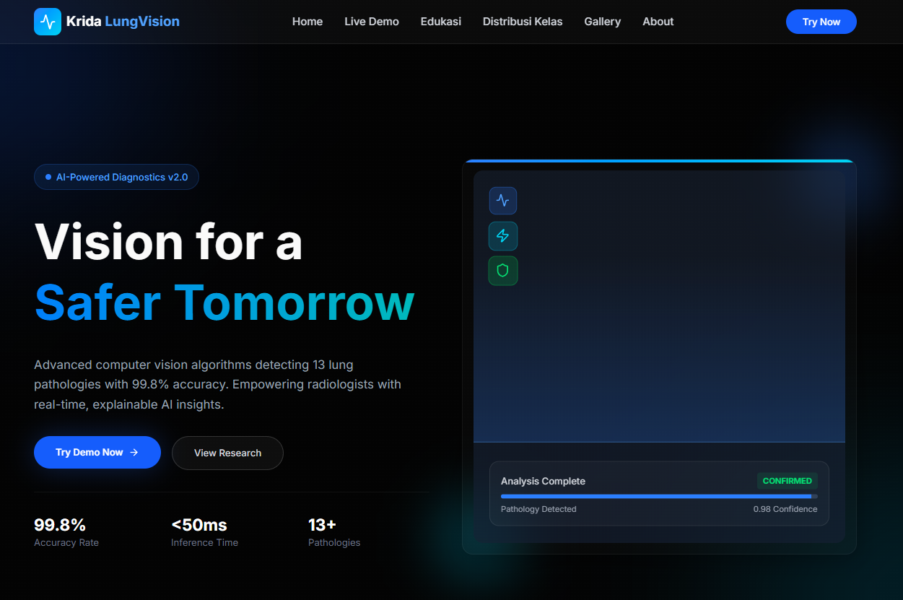
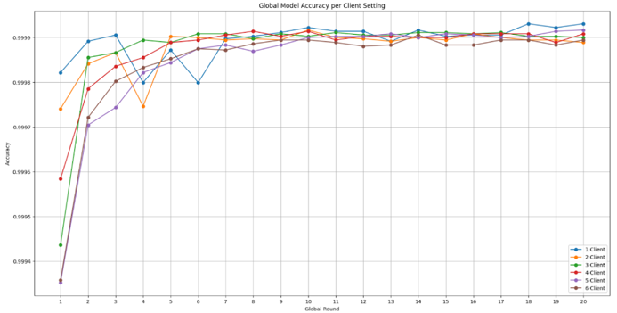

Programming
Bahasa untuk membangun logika aplikasi dan mengolah data.
HALO, SAYA STEVEN
Lulusan S1 Informatika yang tertarik pada Backend Development, aplikasi web, pengolahan data, dan keamanan sistem.
Berfokus pada pengembangan software, backend, dan solusi berbasis data.
01 / TENTANG SAYA
Saya lulusan S1 Informatika dari Universitas Kristen Krida Wacana (UKRIDA). Saya menikmati proses membangun aplikasi dari merancang alur, mengelola data, mengembangkan fitur, sampai menguji hasilnya.
Pengalaman saya mencakup pengembangan aplikasi web dan kegiatan riset machine learning untuk deteksi anomali pada Industrial Internet of Things. Saat ini saya ingin terus memperdalam kemampuan software development, khususnya backend dan pengembangan sistem yang andal.
02 / KEAHLIAN
Teknologi yang pernah saya gunakan dalam proyek, pembelajaran, dan riset.
Bahasa untuk membangun logika aplikasi dan mengolah data.
Mengembangkan antarmuka, API, serta integrasi aplikasi.
Mengelola data dan menjaga alur kerja pengembangan.
Eksplorasi data dan eksperimen machine learning.
Beberapa project yang saya kembangkan untuk menerapkan kemampuan programming dan pengembangan aplikasi.
.png) 01 / 04
01 / 04
Aplikasi e-commerce untuk menampilkan produk, membantu pengguna menjelajahi katalog, dan mendukung pengalaman belanja online.
.png) 01 / 04
01 / 04
Aplikasi manajemen inventaris dan penjualan dengan pengelolaan produk, pencatatan transaksi, dashboard, dan laporan.

01 / 04Aplikasi untuk dokumentasi dan evaluasi kegiatan dengan autentikasi admin, pengelolaan data, pencarian, filter, dan ekspor Excel.

01 / 04Project klasifikasi citra X-ray dengan model machine learning serta antarmuka aplikasi untuk mendukung proses klasifikasi.

01 / 04Penelitian deteksi intrusi pada Industrial IoT menggunakan Deep Neural Network dan Federated Learning dengan algoritma FedAvg.
04 / PENGALAMAN
Belajar berkolaborasi, memecahkan masalah, dan mengubah kebutuhan menjadi solusi.
Research Center for Connected Intelligent and Security (R-CCIS), UKRIDA
Mengerjakan riset Federated Learning untuk deteksi anomali pada Industrial IoT, termasuk preprocessing data, exploratory data analysis, simulasi pembagian data Non-IID, pelatihan, dan evaluasi model dengan Python dan TensorFlow.
Fakultas Psikologi — UKRIDA
Mengembangkan aplikasi web dokumentasi dan evaluasi kegiatan untuk membantu pengelolaan data, pencarian dan filter, ekspor Excel, serta integrasi database.
Universitas Kristen Krida Wacana (UKRIDA)
Mempelajari dasar pengembangan perangkat lunak, database, pemrograman, dan pengolahan data.
05 / KONTAK
Saya terbuka untuk peluang di bidang software development, khususnya backend dan pengembangan aplikasi web. Mari berdiskusi dan berkolaborasi dalam membangun solusi digital yang bermanfaat.
Hubungi saya ↗